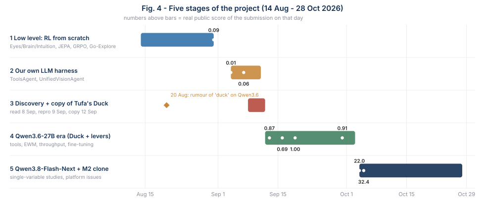
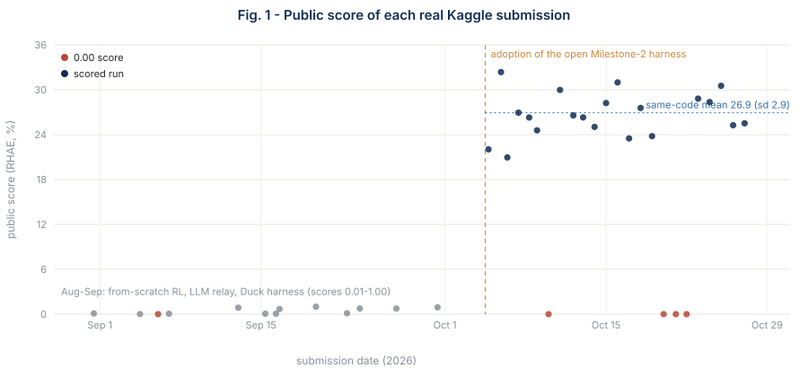
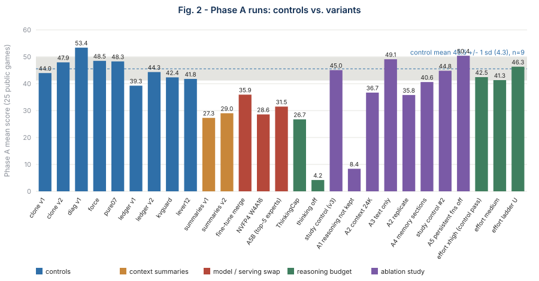
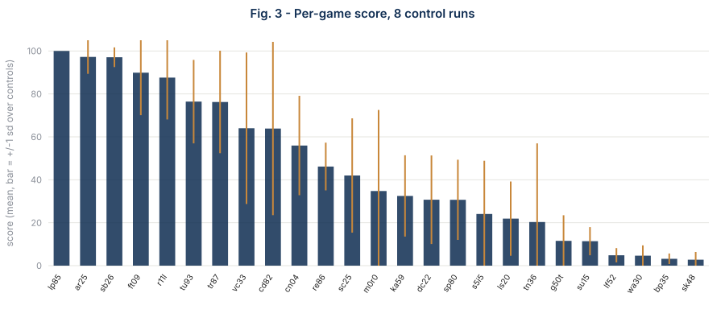

Ten Weeks on ARC-AGI-3: A Negative-Results Chronicle of Agent-Harness Engineering Under Evaluation Noise
Abstract
We document ten weeks (14 Aug - 28 Oct 2026) of attempts to build an agent for the ARC Prize 2026 - ARC-AGI-3 Kaggle competition, an interactive benchmark in which an agent must discover the rules of unseen turn-based games and complete as many levels as possible, efficiently, under an offline, single-GPU, nine-hour budget. We tried, in order: (i) a from-scratch reinforcement-learning agent (JEPA world model + GRPO), (ii) LLM "relay" agents with hand-written tools, (iii) the open Duck REPL harness with local open-weights models, with and without sandbox tools and executable world models, (iv) fine-tuning, and (v) the open Milestone-2 solution (Qwen3.8-Flash-Next + Franzen's harness patch) together with over a dozen single-variable modifications of it.
Our best public score is 32.36 (rank ~146 of ~4,300 at the time; 244 of 4,927 on 28 Oct, after the plateau of ~27 was shared by many clones of the same open solution). We make no state-of-the-art claim: the score comes from an open solution that we cloned. The contribution of this report is methodological and negative. Across 19 Phase-A runs on the 25 public games we find that (1) evaluation noise dominates: nine near-identical control runs of the cloned system (unmodified, or modified in ways that left throughput intact) have mean 45.5 and standard deviation 4.3 (levels completed: coefficient of variation 0.07), and 19 real submissions of essentially the same code have mean 26.9 and standard deviation 2.9, so single-run comparisons cannot resolve effects below roughly 10 points; (2) every harness or model modification we tried either matched the control or was worse, including shorter reasoning, summaries/compaction, fewer active experts, an alternative 4-bit format, and a fine-tuned merge; (3) reasoning volume is the lever that matters: turning thinking off produces 45% more actions and an order of magnitude fewer completed levels (4.2 vs 45.5); and (4) platform behaviour is itself a confound: weight-loading time ranged from 5 to 47 minutes across checkpoints, and the delay before a notebook started executing ranged from minutes to 3.5 hours for identical resources. We release the data and scripts and describe a pre-specified ablation study whose results will be added to Section 8.
1. Introduction
ARC-AGI-3 [1] replaces static input/output puzzles with interactive environments: the agent receives 64x64 grids of 16 colours, a small set of actions, and no instructions; it must infer the objective, plan, and finish levels in as few actions as possible. At launch, frontier models scored below 1% on it, while humans score 100%. The Kaggle competition [2] adds hard constraints: no internet, one RTX PRO 6000 (96 GB) per run, a nine-hour wall-clock budget for the whole hidden set, one submission per day and two final selections.
This report is a chronicle written for two audiences: researchers interested in how harness engineering behaves when the evaluation is noisy, and practitioners who might otherwise repeat our dead ends. We deliberately report negative results with the same care as positive ones, and we state at each step what the evidence can and cannot support.
A rule we imposed on ourselves. The agent must learn each game by itself. We did not hand-craft per-game reward shaping, per-game prompts, or knowledge of game internals; the only feedback used is levels completed, game-over and win signals. Public-set results are therefore reported as such, with the usual caveat that public games are also used for development.
2. Setting and evaluation methodology
2.1 Scoring
Following the official methodology [3]: a level's score is (human_baseline_actions / agent_actions)^2 (capped at 1.15), a game's score is the level-index-weighted average over all its levels (unreached levels contribute zero but keep their weight), and the global score is the plain mean over games. Reaching more levels therefore dominates efficiency, which makes throughput (actions per unit of GPU time) a first-order quantity.
2.2 Two evaluation modes
- Phase A (offline proxy). One pass over the 25 public games on the same hardware, ~2 h 05 per run, giving a mean score, levels completed, actions and tokens. We use it for all comparisons below.
- Real submission. The same notebook re-run by Kaggle on the hidden set (about 110 games in the harness's own configuration), score visible on the public leaderboard.
Phase A is not a predictor of the real score: for the Flash-Next family it is about 1.7x higher (45.5 vs 26.9), the ratio is unstable, and one Phase A difference of 12 points (diag v1 vs v3) corresponded to indistinguishable real scores (27.5 vs 28.3).
2.3 Compute and logistics
Kaggle grants 30 GPU-hours per week (counted as notebook execution time, ~2.3 h per Phase-A run), with at most two concurrent GPU sessions. A local RTX 3090 (24 GB) was used for small-model and tooling work only. A daily cron submits the current best kernel (one submission per day).
3. Chronology: five stages
The work falls into five stages, from the lowest-level approach (learning to act from raw grids) to the use of a competitive open harness with successive open-weights models. Figure 4 gives the overview; Figure 1 shows the public score of every scored submission (37 scored, 5 of them 0.00); Appendix C lists the dated events.


Three model generations appear in the story and are easy to confuse: Qwen3.6-27B (dense; the model behind the Duck harness, Sep 9 - Oct 3), Qwen3.8-27B (dense; used by our own early LLM agents on 7 Sep and as the target of our fine-tuning attempts), and Qwen3.8-Flash-Next (125B mixture-of-experts, 6B active, a preview of the Qwen4 architecture; used from 4 Oct).
Stage 1 - Low level: reinforcement learning from scratch (14-31 Aug)
Hypothesis. An agent can learn to play unseen games end to end: a ViT "Eyes" encoder turns the frame into a latent, a frozen small LLM "Brain" predicts action vectors, and an I-JEPA-style "Intuition" module predicts the next latent as a world model (proposal of 14 Aug; the risk of a frozen-LLM domain mismatch was raised at once and treated as something to ablate).
What we built. A Grid-JEPA world model, curiosity-driven GRPO, Go-Explore archives, GRPO group filtering, encoder isolation, PPO-clip with a KL trust region; a literature search (20 Aug); an empirical probe of DINOv2/v3 against from-scratch encoders.
What happened. GRPO ablations on one game (ls20) were exhausted by 16-17 Aug, leading to a JEPA-first pre-training. A cascade of real bugs followed (NaN KL on the first update, a curiosity mask giving zero variance, out-of-memory in vectorised collection, "zero gradient updates", a NaN from an out-of-distribution outlier, a dead gradient plus a noisy-TV effect), after which Stage 2 was restarted from scratch (21 Aug). On 29 Aug we confirmed that the missing PPO trust region was the real cause of policy collapse, but the agent then hit a hard exploration ceiling at scale.
Side findings. On 20 Aug we inspected two public Kaggle agents; one read the hidden game source and ran BFS on the engine's internal objects. We rejected that approach as per-game hacking (Section 1). The same day a Discord message (second-hand, no link) said the competition "meta" was a solution nicknamed duck built on Qwen3.6; we noted it but did not act on it for three weeks.
Result. 536,000+ local episodes on ls20 and 0/25 on the local game set without a single win, yet the first real submission (31 Aug, after discovering the real MyAgent/gateway submission mechanism rather than the starter notebook's direct loop) scored 0.09. A local zero does not imply a real zero.
Stage 2 - Our own LLM harness (4-10 Sep)
Hypothesis. A small local LLM can be the "brain" of a tool-calling agent with explicit perception.
What we built. ToolsAgent, VisionToolsAgent and UnifiedVisionAgent (Qwen3.8-27B multimodal, calibration, GPU) with state-graph replay, persistent "brain notes", cross-game memory and a shared-palette region detector inspired by how a human plays; a local 25-game benchmark runner, a hindsight "replay reflection" diagnostic, bare-VLM ablations with zero scaffolding, and a human-play recorder. In parallel, a goal-conditioned RL track (passed a synthetic sanity check, unstable on real ARC) and a plan to fine-tune the brain with GRPO (two runs, 8 and 25 steps, inconclusive).
What happened. We fixed a brain-call budget bug and other execution bugs; better input visibly changed the model's conclusions on stuck games, but the agent identified its avatar on 13 of 25 games and completed a level on only 2-3: a comprehension-to-execution gap.
Results. 0.01 (4 Sep), 0.00 (6 Sep), 0.06 (7 Sep).
Stage 3 - Discovery and copy of Tufa Labs' Duck harness (8-12 Sep)
Trigger. Instead of iterating on the stalled tracks we asked what actually wins and, on 8 Sep, read the two strongest public approaches in full before writing code: Duck (Tufa Labs; #1 on the Kaggle leaderboard at 11.04 at the time; one Python-REPL tool exposing the game state as inspectable variables, Qwen3.6-27B FP8) and Executable World Models (Rodionov, arXiv:2605.05138).
Convergent validation. Duck's segmentation view was functionally our own blob finder, and its prompt warned about mistaking a HUD strip for clickable objects, the failure mode we had found and fixed on 7 Sep. Duck's own finding, that hand-crafted tools hurt, was the opposite of the direction of our own tool-building.
Reproduction. On 8-9 Sep we ran Duck's real implementation on local games (mean 1.69 vs its published 1.60), tried three serving routes with vLLM (three distinct, diagnosed failures), and on 9 Sep ran its real FP8 + vLLM setup on Kaggle's RTX PRO 6000: 13 of 25 games, mean 1.69. The gap with our earlier attempts was hardware and serving, not agent design.
Our re-implementation failed. A from-scratch re-implementation of the harness (ablation_run.py) reached only 2 of 25 levels against 13 for the original notebook, even after fixing a context-overflow bug, and we never found the remaining difference. In parallel, ten Kaggle runs with a smaller multimodal model (Qwen3-VL-8B) ended with empty responses that we traced to vLLM tool-call-parser bugs (9-10 Sep). On 10 Sep we also found that Duck's loop (many actions per model turn) is structurally incompatible with the competition's one-action-per-call agent interface.
Decision (12 Sep). We stopped re-implementing and adopted Tufa's public notebook unmodified as the project baseline ("baseline v2"); every later change would be a patch into its single customisation cell. This is the "copy" referred to throughout: the harness is Tufa Labs' and Franzen's, not ours.
Stage 4 - The Qwen3.6-27B era (12 Sep - 3 Oct)
All results in this stage are on a scale where the baseline scores about 1.
- Tools hurt (13-15 Sep). Seven sandbox tools scored 0.87 against 1.00 for the unmodified baseline; removing tools one at a time reproduced most of the drop, in agreement with Tufa's observation [4].
- Executable world models (16-17 Sep). A verified agent-written
engine.pyscored 4.46 vs 4.86 on a Kaggle development run and 0.69 vs 1.00 for real; the planning tool was never invoked. - Variance (13-24 Sep). Four passes of an identical configuration swung one game from 0 to 43; a byte-identical re-run moved the real score from 1.00 to 0.76; a local 2.08 had preceded a real 0.87. Hence the rule: never act on a single run.
- Throughput starvation (19 Sep). The bottleneck was not strategy: 28 concurrent games shared one GPU (~8 tokens/s each), all 25 games were killed by the per-game cap, one hung request wasted 11% of every budget. "Batching actions" and "bigger time cap" levers regressed locally. The clean baseline re-submission scored 1.00, the best of the stage.
- Fine-tuning (21-27 Sep). 4,065 reasoning turns were mined from 75 real transcripts, STaR-SFT and DPO datasets built, a training pipeline on Qwen3.8-27B debugged. A silent loading bug (FP8 weights loaded without their block scales) produced a model that loaded without NaNs and generated gibberish; ~23 hours of Colab compute were lost, and Colab later offered only a T4.
- Format drift (1-2 Oct). Four different hallucinated tool-call formats in stuck games traced to a single prompt sentence that assumed a chat template the local server did not apply; moving to native tool-call parsing nearly doubled a local mean (0.11 to 0.20; local scale, one run).
- Supervisor lever (30 Sep). Format recovery plus a stagnation supervisor scored 0.91 for real, the best modification but not better than the unmodified baseline; a community LoRA merge scored 1.64 against 2.85 in one Kaggle development run.
By 3 Oct more than 15 variants had been tried and none beat the unmodified harness on the real scale. Our attempt to push the combined-levers variant to Kaggle was then blocked by a hard-coded vLLM wheelhouse pin, and attention turned to the Milestone-2 solution, which used a different model.
Stage 5 - Qwen3.8-Flash-Next and the Milestone-2 solution (4-28 Oct)
Adoption. Around the 30 Sep milestone, Daniel Franzen published his Milestone-2 solution: a large patch of Duck plus Qwen3.8-Flash-Next served through a custom SGLang build (Pennyroyal). Cloning it unmodified (4 Oct) gave Phase A 43.96 and a real 22.03; a log-only variant gave 32.36 (5 Oct, our best); an independent replication gave 20.95. The jump from ~1 to ~25 is attributable to this model and harness, not to our own changes.
Plateau and lottery. The same code then scored 23.5-31.0 on daily resubmission (mean 26.9, sd 2.9). Single-submission teams on the leaderboard have the same mean, so the public ranking is largely best-of-N luck (Section 4).
Single-variable studies. Thinking budget, forced reasoning, verified-facts ledger, rolling summaries, adaptive admission of 11-12 streams, a fine-tuned LoRA merge (Section 6; held-out cross-entropy 1.09 to 0.61), Swift 1.5, a DeepSeek-based harness, Nemotron Super and four model swaps (Section 5): none beat the control.
Operations. A daily auto-submission loop (from 8-9 Oct); handling of four 0.00 scores during platform incidents (10-22 Oct) by a longer request-retry window plus keep-alive (pure07ka, 23 Oct), after which submissions were stable (Section 7).
Scientific turn. From 28 Oct, a pre-specified harness ablation study with full data capture (Section 8), after the platform and literature scans showed no remaining lever and no inspectable method from the top teams.
4. Evaluation noise

| Quantity | Value |
|---|---|
| Phase A control runs (near-identical, n) | 9 |
| Phase A score: mean, sd, range | 45.5, 4.3, 39.3-53.4 (CV 0.095) |
| Levels completed: CV | 0.07 (8 runs) |
| Actions per run: mean, CV | 5,037, 0.098 |
| Real submissions, Oct 5-27 (n, mean, sd, max) | 19, 26.9, 2.9, 32.36 |
| Share of per-game variance in the 8 most volatile games | 73% |
| Games that are essentially deterministic | 6 of 25 (e.g. lp85, sb26 ~100; bp35, sk48 ~3) |

Consequences. (a) With three control runs and two runs per variant the minimum detectable effect is ~11.5 points (80% power); pooling nine controls brings it to ~10. Smaller effects are undetectable in this budget and must be reported as such. (b) Levels completed (CV 0.07) is a better primary metric than the score (CV 0.095). (c) The public leaderboard in this regime is largely a best-of-N lottery: teams with a single submission have a mean of ~26.7 (sd ~2.5), equal to our true level, and median scores rise with the number of submissions. Our 32.36 is consistent with the best of ~25 draws from N(26, 3.4).
5. Single-variable studies of the cloned system
All rows are Phase A (25 public games, one pass) on the same hardware. z is the distance from the control mean in control standard deviations. Raw data: data/phaseA_runs.csv.
| Variant | Phase A | z | Levels | Actions | Interpretation |
|---|---|---|---|---|---|
| Controls (n=9) | 45.5 | 0 | ~102 | ~5,040 | reference |
| Thinking off | 4.2 | -9.5 | 8 | 7,642 | 45% more actions, almost no levels: reasoning produces progress |
| ThinkingCap (shorter-thinking fine-tune, W4A16) | 26.8 | -4.3 | 81 | 8,619 | -28% tokens, +65% actions, fewer levels; draft accept length fine (2.65) |
| A5B (top-5 instead of top-10 experts) | 31.5 | -3.2 | 84 | 4,940 | throughput unchanged; capability loss costs ~14 points |
| NVFP4 W4A16 (ModelOpt + Marlin) | 28.6 | -3.9 | 72 | 2,691 | job-level generation 201 tok/s vs 437-700 for other runs, KV cache saturated, 47 min load |
| Rolling summaries (compaction) v1 / v2 | 27.3 / 29.0 | -4.2 / -3.8 | 74 / 73 | ~2,700 | ~4.5x more uncached prefill tokens, actions halved |
| Fine-tuned LoRA merge (Section 6) | 35.9 | -2.2 | - | 5,714 | held-out cross-entropy -44% yet play worse, also on games it never saw |
| Forced thinking budget, effort ladder (xhigh / medium / U) | 42.5 / 41.3 / 46.3 | within noise | 94-103 | 4.4-5.1k | no detectable effect |
| 11-12 concurrent streams, adaptive admission | 41.8 / 42.4 | within noise | 93-96 | 4.0-4.6k | extra concurrency raises cold prefill (3-6x) and cancels the gain |
| Verified-facts ledger | 39.3 / 44.3 | within noise | 94-104 | ~5.1k | not significant |
| Swift 1.5 (smoke) | - | - | - | - | response length unchanged (1,620 tokens), accept length 2.30 vs 2.02: no lever |
| Nemotron-3.5 Super (smoke) | - | - | - | - | loads, then silent hang on the RTX PRO 6000 stack |
Reading the table. Nothing beat the control. The two runs that changed what the model thinks (thinking off, shorter-thinking) show the clearest effect, and in the unfavourable direction. Runs that changed serving behaviour fail through throughput: the score tracks the number of actions the GPU can afford, as the ~4.5x prefill penalty of summaries and the much lower generation rate of the NVFP4 build show. Offline analysis of four control runs supports "time is the binding constraint": 17 of 25 games end on the per-game time cap and progress is still increasing in the last quarter of the budget (+10 in the last 25% of time).
We also examined the public solution space as a whole. Nearly all public notebooks we pulled are forks of the same open solution with scheduler or memory tweaks; the ideas we examined from them (solved-level memory, repeat guard, undo exposure) were either already present in the base patch (the last two) or fell inside the noise (solved-level memory: Phase A 40.7 vs 48.3, real 28.3 vs 27.5). The teams above ~50 on the leaderboard have published nothing we could inspect before the deadline.
6. Fine-tuning: what we tried, how we did it, and why it did not help
Fine-tuning was our recurring hope for breaking the plateau, and it is the largest block of engineering in this project that produced no score. This section records what was built and the evidence about why it failed, because the how is reusable even though the outcome is negative.
6.1 Five attempts
| When | Model | Method | Data | Outcome |
|---|---|---|---|---|
| 3-4 Sep | Qwen2.5-0.5B "brain" of our own agent | GRPO (TRL) with the PPO-clip trust region reused from Stage 1; reward = levels-completed delta + win/game-over - 0.01 per step, nothing else | live rollouts | two short runs (8 and 25 steps, the second with entropy + KL terms); greedy evaluation still 0 wins; inconclusive |
| 21-22 Sep | ministral-3:14b | DPO | 218 pairs: rejected = a real turn whose action changed nothing, chosen = a synthetic rewrite by the same model under a "write a probe that verifies the action will change the board" instruction | adapter trained (after a NaN traced to ignored FP8 scales); no measured effect in the real harness |
| 21-27 Sep | Qwen3.8-27B (dense) | STaR-style SFT on winning games | 4,065 turns mined from 75 real Qwen3.6 transcripts, then 2,753 turns from 20 winning games | training stack debugged (five bugs); a silent FP8 loading bug wasted ~23 h of Colab; Colab then offered only a T4; on hold |
| 29-30 Sep | Qwen3.6-27B | merge of a community LoRA trained on 22 winning Duck trajectories (CC0 data) | none of ours | merged locally with a custom byte-range safetensors reader (the 36 GB checkpoint could not be memory-mapped); one Kaggle development run 1.64 vs 2.85 baseline |
| 14-18 Oct | Qwen3.8-Flash-Next (125B MoE) | LoRA SFT with DAgger relabelling, trained on one RTX PRO 6000 | 1,744 examples (1,414 STaR + 330 DAgger), 333 validation examples on 5 held-out games | held-out cross-entropy -44% but Phase A 35.9 vs 45.5 (Section 5); the main case study below |
Two lessons from the first four rows apply to every later attempt. Labels must come from ground truth, not from outcomes: our first labelling rule ("a turn is good if its level was eventually completed") was falsified by a spot check within hours - a level can fail from lack of time while the reasoning was sound - and was replaced by joining each turn with the structured event log (board, reward, level after every real action). "It loads and gives no NaN" is not a test: a model loaded with FP8 weights but without their block scales produced fluent gibberish; a generation check on a trivial prompt is the minimum.
6.2 The Flash-Next LoRA, step by step
Data. Real prompts are about 70k tokens (median), so training examples are compressed states (system prompt, the previous turn trimmed, the current turn; images only in the last user message; text-only for training). The 1,414 STaR examples come from levels the agent actually solved. The 330 DAgger examples relabel the student's own states: a scripted probe-first teacher replays the recorded actions in the deterministic offline environment, tries each real single action on a copy of the environment, and keeps the most informative non-fatal action not among the last six; its reasoning is about 70 tokens against a median of ~3,050 for the student, and it uses no privileged solution information. We deliberately created no labels for unsolved levels: a hand-guessed solution for one of them was checked in the environment and found false, and a non-inferable label would teach confident hallucination. Validation uses five games never seen in training (ar25, ka59, s5i5, sb26, tn36).
Making a 125B model trainable on one 96 GB GPU. The HuggingFace implementation materialises experts in BF16 (about 225 GiB); documented recipes did not cover this architecture. We wrote a packed-NVFP4 expert module (0.5625 bytes per parameter, frozen) whose forward pass dequantises on the fly and whose backward pass re-dequantises instead of storing a BF16 copy; the 51 B n-gram embedding parameters live in host memory as FP8 tables with row-wise dequantisation; and a vectorised sparse-attention indexer (23x faster than the per-token loop). We validated each piece against a dense reference on a tiny random model (logits relative difference 0.003), then on Kaggle ("milestone 1"): load in 588 s, 73.3 GiB on the GPU, zero missing tensors. The checkpoint's FP4 nibble order was determined by loss, not by guessing: 1.11-1.24 with the right order against 4.1-4.9 with the wrong one.
Training. 23.1 M trainable parameters (attention and linear-attention projections only, never the experts), assistant-only loss, 7.4-9.5k tokens per example, ~160 s per step, peak 94.2 of 95.6 GiB, resumable checkpoints across Kaggle sessions. The run reached step 341 of a planned 500 (about 68%; compute budget).
Evaluation before deployment. On 60 held-out examples the cross-entropy fell from 1.093 (base) to 0.629 (step 124) and 0.612 (step 341), with the fine-tuned model better on 100% of examples. We merged the adapter into the dense weights and ran the normal harness.
6.3 Result
- All 25 public games (Phase A): 35.9, against 45.5 +/- 4.3 for the nine controls (z = -2.2) and 48.4 +/- 3.4 for the five closest same-code runs (z = -3.7, predictive p ~ 0.01). It is below the minimum of the eight benchmarked controls on six games and above their maximum on none; the largest losses are
r11l(11 vs 48-100),tr87(5 vs 45-100) andar25(58 vs 78-100). - The five held-out games, two passes: 40.4, against 54.2 for the controls on the same games (the fine-tuned model's own Phase A on them: 37.1). Single run, but the held-out games are the ones the adapter never saw, and it still lost about 14 points.
- Mechanism (partly). On six games a larger share of completion tokens went into very long responses (40.7% of tokens in responses above 4k tokens vs 27.5% for the base model), and
ft09used 1,611 tokens per action against 978. Across all 25 games, however, tokens per action are about the same (793 vs 832), so "it just talks more" is not the whole story.
6.4 Why it probably did not work (hypotheses, not findings)
- Cross-entropy measured style, not decisions. A recent study of SFT trajectory curation reports that a large cross-entropy drop was mostly adoption of the target style, and that gating examples on success was no better than random [8]. Our held-out loss fell on every example while play got worse, which is exactly what that reading predicts.
- Forgetting in a post-RL model. Standard LoRA SFT is reported to collapse the reasoning of post-RL models while task accuracy on the training distribution holds [9], and out-of-distribution performance can peak early (around 20% of training) and then degrade [10]. We stopped at 68% of the plan and never evaluated the step-124 checkpoint in the harness; the early-peak hypothesis is untested.
- Train/serve mismatch. We trained on compressed 8k-token states and served 70k-token contexts.
- Memorisation. 20 games, ~1.4k examples, labels taken from the model's own winning traces on the same games ("SFT memorises, RL generalises" [11]); the held-out result is consistent with this.
- No budget for controls. One run per configuration, no early-checkpoint or lower-learning-rate comparison, no second seed (one training run cost ~10 GPU-hours).
What we would do differently: evaluate several early checkpoints in the real harness before the final merge; use the harness-level metric (levels per GPU-hour) as the stopping criterion rather than cross-entropy; regularise towards the base model (KL or null-space constraints); prefer methods that shorten and sharpen reasoning over methods that imitate it; and train on more games than the evaluation uses.
7. Platform effects as a confound
From 16 Oct, several runs scored 0.00 although the same notebook had scored ~30 before. The community and Kaggle staff attribute this to degraded model-loading (poisoned cache entries in some regions, slower mounts), and a documented one-line fix exists (a hard-coded 12-minute server start-up deadline in the Duck notebooks). We observed related behaviours:
- model-weight load time: ~5 min (A5B), ~7 min (ThinkingCap), 47 min (NVFP4 variant), all on the same hardware class;
- time before the notebook even started executing: from minutes up to 3 h 30 for identical resources;
- inputs mounted in two different layouts (nested vs flat) for the same declared sources, which broke three of our test runs - we made path resolution robust and kept a log of the layouts we saw;
- four of our own submissions scored 0.00 between 10 and 22 Oct; we mitigated with a long request retry window and a keep-alive action while the server loads, after which five consecutive submissions scored 25-31.
For measurement this matters twice: it adds noise to real scores, and it consumes the very budget (start-up time) that determines how much game-play fits into the nine hours.
8. A pre-specified harness ablation study (in progress)
Because the single-variable studies above were opportunistic, we are running a designed study with full data capture to measure which parts of the harness matter, motivated by the literature. OpenAI reports that retaining private reasoning between actions and compacting instead of truncating raised the same model from 7.8% to 38.3% on ARC-AGI-3 [5]; an empirical study of coding-agent harnesses reports five context-management strategies x four budgets, with rule-based elision before summarisation being most efficient [6]; and a study on ARC-AGI-3 finds that model capability and reasoning effort matter more than executable world models, simplification or verification [7].
| Arm | One switch (everything else = control) | Question |
|---|---|---|
| ctrl | none (instrumented control) | variance on identical code |
| A1 | preserve_thinking off (request and server default) | do reasoning traces in history matter for an open model? |
| A2 | history drain 58K -> 24K tokens | cost of aggressive eviction (budget axis) |
| A3 | text-only: no grid image, no diff or animation images | contribution of the visual channel |
| A4 | persistent world-model memory sections on (default off) | does text-form world modelling help? |
Hypotheses fixed before running: H1 A1 lowers levels completed; H2 A2 lowers levels but may raise action count; H3 A3 lowers levels; H4 A4 has no detectable effect (the upstream authors turned it off). Design: one run per arm first, a second replica for arms that move, nine historical controls pooled with the new control (minimum detectable effect ~10 points, levels as primary metric, per-game paired bootstrap as secondary). Optional second wave: persistent functions off, priority scheduler off.
Data captured for every run (about 2.7 GB): the full request of every model call (messages, tool schema, template kwargs), the 64x64 board and ASCII rendering after every action (so every game can be replayed visually), the full analysis transcript of each turn, per-action tokens and wall-clock, server telemetry (cache hit, accept length, throughput), a run manifest (all switches, model/patch hashes, GPU) and an inventory check that every game has all files.
Results: to be added (Table 7.1, Fig. 4: per-arm levels and score vs control band; per-game paired differences).
9. Discussion and lessons
- Measure the noise before the effect. Most of our early "progress" (local 2.08, 2.85, 0.29) was noise; the real score of the same code moved by ±3 points. Pre-computing the minimum detectable effect would have saved weeks.
- Throughput is the first-order variable. Under a hard time cap, anything that adds prefill, shrinks effective concurrency or lowers decode speed costs more than it gains. Check telemetry (cold-prefill rate, running requests) before judging a lever by its score.
- Do not cut reasoning to buy actions. In our setting more actions at lower reasoning produced fewer levels. This is consistent with reports that capability and reasoning effort dominate scaffolding details [7].
- Hand-built tools and extra mechanisms rarely help a strong generic harness [4]; every addition must pay for its prompt tokens.
- Silent failures need positive tests. Our FP8 loading bug passed every "does it load and not NaN" check. Always test generation on a trivial prompt.
- Platform behaviour is part of the experiment. Log mount layouts, load times and start-up delays with every run.
- A better loss is not a better agent. Our fine-tune cut held-out cross-entropy by 44% on every example and played worse; judge fine-tuning by harness-level outcomes on held-out games, early and often.
- Ranking is a lottery near the plateau. With sd ~3 per submission and best-of-N selection, a ~5-point difference between teams is not evidence of a better method.
10. Limitations
- All variants are single runs (except where stated) on the 25 public games, which are also the development games.
- Control runs were executed on other days/machines than the variants; platform drift cannot be excluded.
- Phase A does not predict real scores; we did not obtain per-game real scores.
- We could not inspect the methods of the top-ranked teams.
- The headline score comes from an open solution authored by others; our contribution is the evaluation and the negative results.
11. Reproducibility and data
Scripts, kernels and raw results live in the project repository: notebooks/ (kernel builders, e.g. build_study_kernels.py), results/*/benchmark.json and summary.txt, docs/report/data/ (phaseA_runs.csv, real_submissions.csv, per_game_controls.csv, stats.json) and docs/report/make_report_data.py which regenerates every figure of this report. Model weights and third-party harness code are not redistributed; see the licences of Qwen3.8-Flash-Next (Qwen Community License 1.0), Tufa Labs' Duck harness, Franzen's patch, the Pennyroyal SGLang build, Intel's AutoRound checkpoint and Albucino's drafter.
Acknowledgements
Jeroen Cottaar and Tufa Labs (Duck harness), Daniel Franzen (Milestone-2 solution), John Pezzulli (Pennyroyal SGLang), Intel (AutoRound checkpoint), Albucino (MTP drafter), the Kaggle forum contributors who documented the platform issues, and the ARC Prize Foundation.
References
[1] ARC-AGI-3: A New Challenge for Frontier Agentic Intelligence. arXiv:2603.24621.
[2] ARC Prize 2026 - ARC-AGI-3, Kaggle competition page and rules.
[3] ARC Prize scoring methodology, docs.arcprize.org/methodology.
[4] Tufa Labs, Duck Harness: Winning Solution for ARC-AGI-3 Milestone 1, tufalabs.ai/research/duck-harness.
[5] "ARC-AGI-3 Scaffolding Beats Model Upgrades: Same AI, Two Settings, 4.9x Score Gain", TechTimes, 6 Oct 2026 (secondary report of OpenAI's two settings; the primary source was not inspected).
[6] An Empirical Study of Harness Design for Coding Agents. arXiv:2609.20804.
[7] S. Rodionov, Do Coding Agents Need Executable World Models, Simplification, and Verification to Solve ARC-AGI-3? arXiv:2607.15439.
[8] Han, on trajectory curation for supervised fine-tuning of coding agents. arXiv:2607.17205.
[9] NB-LoRA: null-basis constrained LoRA against reasoning collapse in post-RL models. arXiv:2609.25618.
[10] Study of supervised fine-tuning forgetting as rotation of singular vectors, with early peak of out-of-distribution performance. arXiv:2508.16546.
[11] T. Chu et al., SFT Memorizes, RL Generalizes. ICML 2025.
Appendix A - Real submissions (public score)
Full list with references: data/real_submissions.csv. Selected rows:
| Date | Configuration | Score |
|---|---|---|
| 31 Aug | From-scratch RL (Eyes+Brain, GRPO+PPO-clip+Go-Explore) | 0.09 |
| 4-7 Sep | ToolsAgent / UnifiedVisionAgent (LLM relay) | 0.01-0.06 |
| 13 Sep | Duck harness + 7 sandbox tools | 0.87 |
| 16 Sep | Duck + executable world models | 0.69 |
| 19 Sep | Duck, unmodified baseline (Qwen3.6-27B) | 1.00 |
| 23 / 26 Sep | Baseline re-run; concurrency 28->22 | 0.76 / 0.76 |
| 30 Sep | Lever N+R+S (format recovery + stagnation supervisor) | 0.91 |
| 4 Oct | Clone of Milestone-2 solution (Flash-Next) | 22.03 |
| 5 Oct | Same, log-only diagnostic flag | 32.36 (best) |
| 6 Oct | Independent replication of the clone | 20.95 |
| 7-9, 11-19 Oct | Daily resubmissions of the same family | 23.5-31.0 |
| 10, 20, 21, 22 Oct | Daily resubmissions during platform incidents | 0.00 |
| 23-27 Oct | pure07ka (start-up retry + keep-alive) | 25.3-30.5 |
Note: scores before 4 Oct are on the same scale but ~25x lower because they used Qwen3.6-27B (Phase A 1-3); the jump is attributable to adopting the open Milestone-2 solution and Flash-Next, not to our own changes.
Appendix B - Phase A runs
See data/phaseA_runs.csv (19 rows: 9 controls and 10 variants/passes) and Fig. 2.
Appendix C - Dated chronology
| Date (2026) | Stage | Event | Outcome / evidence |
|---|---|---|---|
| 14 Aug | 1 | "Eyes / frozen Brain / Intuition" proposal (ViT -> frozen LLM -> I-JEPA world model) | risks listed; frozen-LLM transfer to be ablated |
| 16-17 Aug | 1 | GRPO ablations on ls20 exhausted | pivot to JEPA-first pre-training |
| 18 Aug | 1 | Stage-2 run (jepa_pretrain) | architecture fix confirmed; retention problem structural to GRPO |
| 20 Aug | 1 | Literature search; encoder isolation, Go-Explore archive, group filtering, PPO-clip + KL | bugs found and fixed on first real run (NaN KL, curiosity mask) |
| 20 Aug | 1 | Two public Kaggle agents inspected | one reads hidden game source: rejected (no per-game hacking) |
| 20 Aug | 3 | Discord: "meta" is duck on Qwen3.6 (second-hand) | noted, not acted on |
| 20 Aug | 1 | DINOv2/v3 vs from-scratch probe (dino_probe.ipynb) | probe run; outcome not summarised here |
| 21 Aug | 1 | Scale-up; vectorised collection; OOM; zero-gradient; NaN; dead gradient + noisy-TV | Stage 2 restarted from scratch |
| 29 Aug | 1 | PPO trust region confirmed as the cause of collapse | hard exploration ceiling at scale |
| 31 Aug | 1 | First real submission (real MyAgent/gateway mechanism found) | 0.09 |
| 4 Sep | 2 | ToolsAgent v5 (persistent brain notes); GRPO brain plan | 0.01 |
| 6 Sep | 2 | ToolsAgent v6 | 0.00 |
| 7 Sep | 2 | UnifiedVisionAgent (Qwen3.8-27B multimodal, GPU, calibration) | 0.06; avatar found on 13/25, level on 2-3/25 |
| 7 Sep | 2 | Benchmark runner, replay-reflection, bare-VLM ablations, shared-palette detector, brain-call budget bug | execution gap diagnosed |
| 8 Sep | 3 | Read Duck (Tufa Labs) and Executable World Models in full | convergent with our blob finder and HUD fix |
| 8-9 Sep | 3 | Duck real implementation on local ls20; level-skip and cross-game battery; three vLLM routes | local mean 1.69 vs 1.60 published; vLLM abandoned |
| 9 Sep | 3 | Real FP8 + vLLM setup on Kaggle RTX PRO 6000 | 13/25 games, mean 1.69: hardware not architecture |
| 9-10 Sep | 3 | Critical-factor ablation (model size, tools, serving); own harness re-implementation; 10 Kaggle runs with Qwen3-VL-8B | re-implementation 2/25 vs 13/25; empty responses traced to vLLM parser bugs |
| 10 Sep | 3 | Scoping a real submission with Duck | loop incompatible with one-action-per-call interface |
| 12 Sep | 3 | Decision: adopt Tufa's unmodified notebook as baseline | all changes as patches to one cell |
| 13 Sep | 4 | Seven sandbox tools submitted; variance study | 0.87; ft09 swings 0-43 over identical passes |
| 15 Sep | 4 | Single-tool ablation sweep | tools reproduce most of the drop |
| 16-17 Sep | 4 | Executable-world-model variant | dev 4.46 vs 4.86; real 0.69 |
| 19 Sep | 4 | Throughput-starvation diagnosis; clean baseline resubmission | 1.00 (best of the stage) |
| 20-24 Sep | 4 | Batching and bigger-cap levers regress; baseline re-run | 0.76 on identical code |
| 21-27 Sep | 4 | Dataset mining (4,065 turns), DPO pairs, STaR-SFT on Qwen3.8-27B | FP8 loading bug found 24 Sep; Colab only T4 on 27 Sep |
| 26 Sep | 4 | Concurrency 28 -> 22 lever | 0.76 |
| 30 Sep | 4 | Format recovery + stagnation supervisor (N+R+S) | 0.91 |
| 1-2 Oct | 4 | Tool-call format root cause; native multimodal serving | local 0.11 -> 0.20 (single run) |
| 3 Oct | 4->5 | Local run of all levers; Flash-Next identified; Kaggle push blocked by vLLM pin | local 0.29, single run |
| 4 Oct | 5 | Clone of Milestone-2 solution (Qwen3.8-Flash-Next W4A16 + drafter, Pennyroyal SGLang) | Phase A 43.96; real 22.03 |
| 5 Oct | 5 | Log-only diagnostic variant | 32.36 (best) |
| 6 Oct | 5 | Independent replication | 20.95 |
| 6-8 Oct | 5 | Forced-thinking, ledger, rolling summaries, 11-12 streams kernels; harness scan; DeepSeek harness study | all within noise or worse |
| 8 Oct | 5 | Daily auto-submission loop | stable family 23.5-31.0 |
| 10-13 Oct | 5 | pure07; original-Duck + NVFP4 on vLLM; per-game difficulty tiers | pure07 Phase A 48.29; NVFP4/vLLM 5.69 |
| 14-18 Oct | 5 | LoRA fine-tuning pipeline on Flash-Next (packed-NVFP4 trainer; held-out CE 1.09 -> 0.61), merge | Phase A 35.94 |
| 16 Oct | 5 | Swift 1.5 smoke | no lever (length unchanged; accept 2.30 vs 2.02) |
| 10, 20-22 Oct | 5 | Four 0.00 scores during platform incidents | slow loading / start-up deadline |
| 20 Oct | 5 | Nemotron-3.5 Super smoke | silent hang after weight load |
| 23 Oct | 5 | pure07ka (retry window + keep-alive) | five consecutive scores 25-31 |
| 27 Oct | 5 | Model-swap explorations: thinking off, ThinkingCap, NVFP4 W4A16, A5B | 4.2, 26.8, 28.6, 31.5 (control 45.5) |
| 28 Oct | 5 | Forum, model and literature scan; ablation study designed | no remaining lever; study A1-A4 launched |